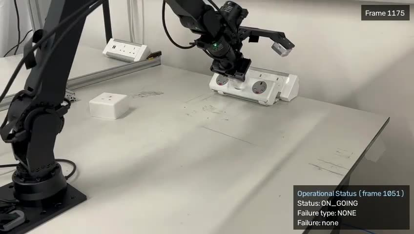

RoboBrain
A real-time, closed-loop monitor for robot tasks. Separate success and failure specialists each ask a vision-language model one narrow question about the current frame, and a positive answer must survive a short verification round before the status changes. A Task Builder turns a plain-language description and a scene photo into the whole monitoring setup.
- 197/198correct episode outcomes across three plug-insertion datasets
- 10–15 Hzlive monitoring with Gemma 4 26B A4B on one RTX Pro 6000
- 2 tasksrobot plug insertion, and object sorting with progress tracking